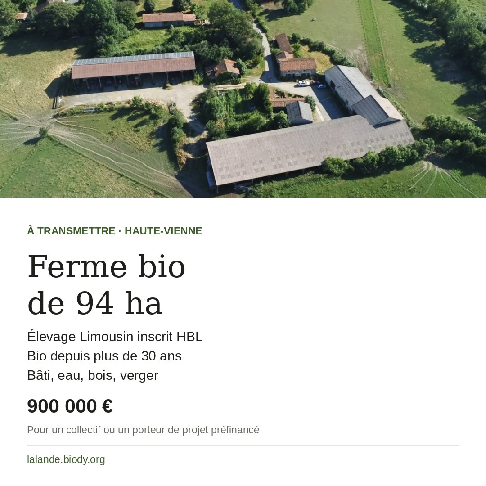
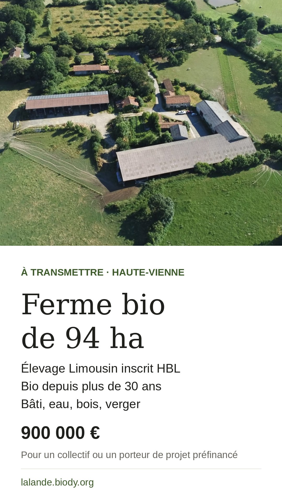
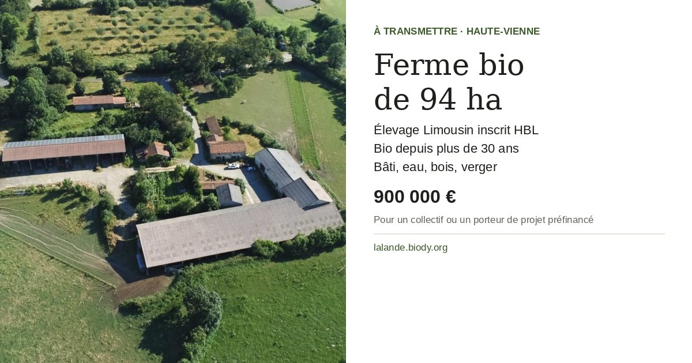

Ferme de La Lande
Au cœur d'un environnement naturel préservé, une ferme familiale conduite avec exigence et respect du vivant, aujourd'hui disponible pour transmission.

Idéal pour
- Des éleveurs souhaitant reprendre un outil structuré en AB et un cheptel de Limousines inscrites
- Un petit groupe de jeunes agriculteur·ices en installation
- Un projet d'écolieu à base productive agricole et multi-activités
- Une famille cherchant autonomie et viabilité économique
Le bâti
- Maison d'habitation de 177 m² habitables, classée C, chauffage géothermique
- Une stabulation et une grande grange
- Un hangar à foin et des dépendances : poulaillers, toits à cochons, ateliers, garage tracteur
- Un four à pain traditionnel avec son labo de préparation


L'élevage
L'exploitation repose principalement sur un élevage de sélection de vaches Limousines inscrites au Herd-Book Limousin (HBL), avec une attention particulière portée au bien-être animal et à l'équilibre des sols. Le troupeau est reconnu pour sa robustesse, sa cohésion et son comportement calme, développés au fil des ans. Il a des qualités bouchères et surtout allaitantes, et constitue un outil de production structuré et transmissible.

Les terres, l'eau, le vivant
Les prairies permanentes et temporaires assurent l'autonomie en foin. Elles sont bordées de haies anciennes, corridors écologiques qui favorisent une biodiversité riche : oiseaux, pollinisateurs, vie des sols. S'y ajoutent deux bois de 5 hectares et un verger de 70 pommiers de variétés anciennes locales, planté il y a 26 ans. L'eau est présente sur le domaine (puits, forage, étang, ruisseau) et garantit l'autonomie.

Ce que le lieu permet
- Poursuivre un élevage biologique de qualité
- L'agroécologie et le pâturage tournant
- La diversification en polyculture et agroforesterie
- La transformation : boulangerie, cuisine participative
- Les circuits courts
- L'accueil pédagogique et l'animation culturelle
- L'installation d'un collectif qui expérimente un écolieu productif, fondé sur la préservation des écosystèmes
Prix
Il comprend :
- la maison : 90 000 €
- tout le bâti : 150 000 €
- une grande partie du matériel agricole (tracteurs, équipements) : 110 000 €
- le cheptel inscrit HBL, 50 vaches mères et leurs veaux : 220 000 €
- les stocks : 30 000 €
- le foncier : 300 000 €
Le prix sera mis à jour le jour de la vente selon l'évolution du troupeau et des stocks.
Un dossier détaillé est disponible sur demande : détail du cheptel, données économiques, plans parcellaires, diagnostics.
Pour les candidats
La ferme est encore en activité, la reprise peut donc être immédiate. Le travail quotidien avec les animaux ne permet pas de répondre à toutes les demandes : seuls les projets préfinancés souhaitant poursuivre en agriculture biologique seront considérés. Merci de votre bienveillance et de votre compréhension.
Contact
Par téléphone ou par mail, en présentant votre projet et son financement.
06 44 87 29 37lucileloup.66@gmail.comPartager l'annonce
Vous connaissez un collectif ou un porteur de projet que ce lieu pourrait intéresser ? Faites-lui suivre l'annonce.
Texte à copier
Ferme bio de 94 ha à transmettre en Haute-Vienne : élevage Limousin inscrit, bâti, eau, bois et verger. Pour un collectif ou un porteur de projet préfinancé.
https://lalande.biody.org/
Visuels prêts à publier
À télécharger et publier avec le texte ci-dessus.


Instagram, Facebook


stories Instagram, Facebook, WhatsApp


Facebook, LinkedIn, X, Telegram